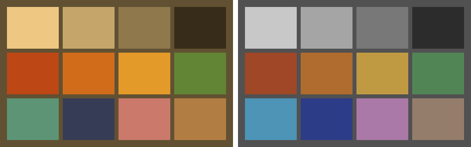
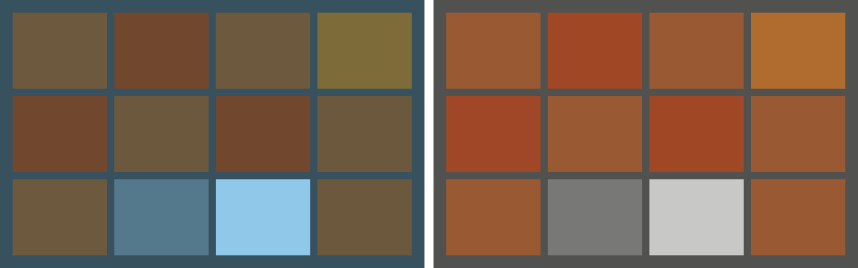
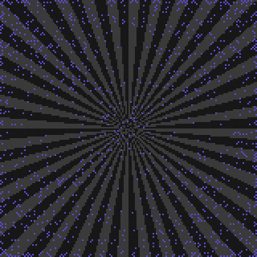
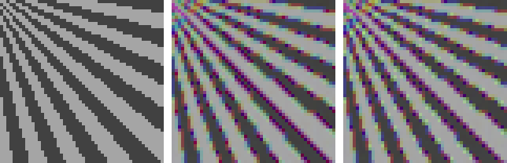

The mosaic that came out of Chapter 2 is honest — linear, zero-based, every photosite truthful or repaired — but it is not yet a measurement of the scene. It is a measurement of the scene times the light, lit_by, exactly as Chapter 1 built it. A white shirt under tungsten produced orange numbers, and no later stage knows or cares that the shirt was white unless something undoes the light first.
That something is white balance, and this chapter makes two claims about it. The familiar one: it can be done with three multiplications, and the entire difficulty is choosing the three numbers. The unfamiliar one, which most explanations skip and this book was partly written to make: it belongs before demosaicing, and the order is worth real, measurable image quality. Section 3.4 runs that experiment against ground truth.
3.1The color of the light
Start with what the problem really is. The scene radiance at every point is reflectance times illumination, wavelength by wavelength. If the pipeline still had spectra, undoing the light would be a division — thirty-six of them per pixel — and it would be exact. But the sensor collapsed every spectrum to a single number through one of three filters. The spectra are gone. All that survives of the illuminant is what it did to those three channel responses — so three multipliers per image is not a simplification of white balance, it is all that the data can support.
Which three? Consider a perfect white surface — reflectance 1.0 everywhere. What the sensor reads on it is the illuminant, as this camera sees it:
code/pxp/whitebalance.pydef neutral_response(light):
"""What the sensor reads on a perfect white surface under this
light: one value per channel. This is the camera's 'color of the
illuminant' — the thing every estimator below is trying to
guess, and the thing our simulator can simply compute."""
response = []
for channel in range(3):
filter_curve = SENSITIVITIES[channel].samples
total = 0.0
for band in range(SAMPLE_COUNT):
total += light.samples[band] * filter_curve[band]
response.append(total / SAMPLE_COUNT)
return response
White balance is then the act of mapping that neutral back onto gray — scale red and blue so they meet green:
code/pxp/whitebalance.pydef gains_from_neutral(neutral):
"""Per-channel multipliers that map that neutral onto gray.
Green is the anchor (gain 1.0), red and blue are scaled to meet
it — the von Kries recipe every camera uses."""
return [neutral[1] / neutral[0], 1.0, neutral[1] / neutral[2]]
This is the von Kries recipe, and it is what every camera and raw processor does. Green is the anchor by convention: it carries the most photosites and, as Chapter 2 showed, usually the strongest signal — one more small dividend of Bayer’s bet.
The simulator now does something no real camera can. We know the light — we typed it in — so we can compute the exactly correct gains and use them as the yardstick for every estimator that follows:
code/pxp/whitebalance.pydef reference_gains(light):
"""Ground truth, by simulator privilege: the exactly correct
gains for a light we know spectrally. Real cameras never have
this; every estimator below is judged against it."""
return gains_from_neutral(neutral_response(light))
For the book’s three lights, the truth comes out as follows. Daylight: gains of (1.23, 1.0, 1.19) — nearly balanced, because our filters were designed in daylight’s world. Tungsten at 2856 K: (0.68, 1.0, 2.61) — red pulled down by a third, blue multiplied by two and a half. The spiky fluorescent: (0.97, 1.0, 1.49). That tungsten blue gain of 2.61 is worth staring at: every blue photosite’s value, and its noise, gets multiplied by 2.61. The blotchy blue shadows in every high-ISO tungsten photograph are this line of arithmetic; the noise chapter’s warning that “every stage either respects noise or amplifies it” has already come true, one chapter later.

The right panel is the chapter’s honest boundary line. White balance makes gray things gray. It does not make color correct — the gap between these filters and human vision is untouched by any diagonal scaling, and closing it is Chapter 5’s matrix. Keep the two jobs separate in your head; most “white balance looks right but skin looks wrong” complaints are the second job being blamed on the first.
3.2Guessing the light
A real camera doesn’t know the illuminant. It has exactly one clue — the mosaic itself — plus whatever the photographer deigns to tell it. Everything in automatic white balance descends from two old, beautifully simple assumptions about scenes.
Assume the world averages to gray. Sum each channel over the whole frame; if scene colors are diverse enough to cancel, the per-channel means are a reading of the illuminant:
code/pxp/whitebalance.pydef gray_world(mosaic):
"""Estimator one: assume the scene, averaged over everything in
it, is gray. Then the average of each channel's photosites *is*
a reading of the illuminant, and we can undo it directly.
Startlingly effective on busy scenes; catastrophically wrong on
scenes with a dominant color, which is exactly what the figure
shows."""
totals = [0.0, 0.0, 0.0]
counts = [0, 0, 0]
for y in range(len(mosaic)):
for x in range(len(mosaic[0])):
channel = cfa_channel(x, y)
totals[channel] += mosaic[y][x]
counts[channel] += 1
means = [totals[c] / counts[c] for c in range(3)]
return gains_from_neutral(means)
Assume the brightest thing is white. A highlight or white surface reflects the illuminant nearly unfiltered; each channel’s near-maximum is then the light’s signature. The percentile guard exists because Chapter 2 taught us not to trust any single photosite:
code/pxp/whitebalance.pydef white_patch(mosaic, keep=0.999):
"""Estimator two: assume the brightest thing in the scene is
white. Each channel's near-maximum (the 99.9th percentile, so a
single hot pixel can't vote) is then a reading of the
illuminant. Works when a highlight or white surface exists;
fooled when the brightest thing is genuinely colored — or
clipped."""
per_channel = [[], [], []]
for y in range(len(mosaic)):
for x in range(len(mosaic[0])):
per_channel[cfa_channel(x, y)].append(mosaic[y][x])
brightest = []
for values in per_channel:
values.sort()
brightest.append(values[int(keep * (len(values) - 1))])
return gains_from_neutral(brightest)
Both assumptions are statements about scenes, not about optics — which means each fails precisely when its scene refuses to cooperate:

The left panel is not a bug — it is the assumption doing exactly what it says on a scene that violates it, and it is why every camera’s AWB occasionally turns a sunset gray. Production AWB stacks heuristics (restrict to plausible illuminant colors, weight near-neutral regions, learned priors), but under them all sit these two estimators; illuminant estimation from a single image remains genuinely unsolved in the general case, because the mosaic of a white wall under tungsten and an orange wall under daylight can be identical.
The third estimator is the photographer. The Kelvin slider in every raw editor is Chapter 1’s physics running backwards — assume the light is a glowing body at the stated temperature, compute what that does to a neutral, undo it:
code/pxp/whitebalance.pydef gains_for_temperature(kelvin):
"""Manual white balance: the photographer names the light.
The Kelvin slider in every raw editor is this function: assume
the illuminant is a glowing body at the stated temperature,
compute what it would do to a neutral, and undo that. It is only
as right as the assumption — and for daylight or fluorescents a
filament is the wrong shape of spectrum entirely."""
return reference_gains(incandescent(kelvin))
It is only as right as its assumption too: daylight and fluorescents are not filaments, which is why real tools pair the slider with a green–magenta tint axis, mopping up the direction of error a blackbody assumption can’t express. (Our fluorescent’s true gains sit visibly off the temperature slider’s reachable line — the simulator will demonstrate the tint axis properly in Chapter 5.)
3.3Three numbers, applied early
However the gains were chosen, applying them is almost embarrassingly small:
code/pxp/whitebalance.pydef apply_gains(mosaic, gains):
"""The stage itself, and it is almost nothing: every photosite
multiplied by its own channel's gain. Three numbers, applied to
the mosaic — this is the entire white-balance operation. All the
difficulty lives in choosing the three numbers."""
height, width = len(mosaic), len(mosaic[0])
balanced = []
for y in range(height):
row = []
for x in range(width):
row.append(mosaic[y][x] * gains[cfa_channel(x, y)])
balanced.append(row)
return balanced
Note what it runs on: the mosaic. Not an RGB image — the CFA data, each photosite scaled by its own channel’s gain, before any demosaicing. The two-tier contract is satisfied with equal brevity — the pxp.fast twin phrases the same multiply as a tiled 2x2 gain map, and the equality test holds them bit-identical. (The estimators are deliberately not twinned: they emit three numbers, run once per image, and there is nothing about a mean or a percentile worth vectorizing on principle.)
Why insist on the order? The armchair argument goes like this. The next stage, demosaicing, must reconstruct two missing channels at every pixel, and every good algorithm for it is edge-directed: it reads local differences in the raw mosaic — differences that mix values from different filters — to decide which way to interpolate. Those cross-channel comparisons only mean what the algorithm thinks they mean if the channels are on a common scale. Hand it a mosaic where blue runs 2.6x hot and every red–blue seam in the image manufactures a gradient that isn’t there — the algorithm sees the light as texture. Armchair arguments, however, are exactly what this book promised not to rest on.
3.4The experiment
The instrument is a preview of Chapter 4: the smallest honest edge-directed demosaic, reconstructing green by choosing the smoother of the horizontal and vertical directions, with a correction term borrowed from the same-color neighbors two steps out (the classic Hamilton–Adams step — Chapter 4 rebuilds and measures it properly):
code/pxp/demosaic.pydef interpolate_green(mosaic):
"""The green plane, gradient-directed.
At each red or blue site, green must be guessed from its four
green neighbors. Averaging all four blurs across edges; instead,
measure how bumpy the mosaic is horizontally and vertically —
using the same-color neighbors two steps out as a correction
term — and interpolate along the *smoother* direction. This
direction decision is the sensitivity that section 3.4 exploits:
it reads raw mosaic values across channels, so it sees channel
imbalance as spurious bumpiness.
"""
height, width = len(mosaic), len(mosaic[0])
green = []
for y in range(height):
row = []
for x in range(width):
value = mosaic[y][x]
if cfa_channel(x, y) == 1:
row.append(value)
continue
left, right = _at(mosaic, x - 1, y), _at(mosaic, x + 1, y)
up, down = _at(mosaic, x, y - 1), _at(mosaic, x, y + 1)
left2, right2 = _at(mosaic, x - 2, y), _at(mosaic, x + 2, y)
up2, down2 = _at(mosaic, x, y - 2), _at(mosaic, x, y + 2)
bump_h = abs(left - right) + abs(2 * value - left2 - right2)
bump_v = abs(up - down) + abs(2 * value - up2 - down2)
if bump_h < bump_v:
estimate = (left + right) / 2 \
+ (2 * value - left2 - right2) / 4
elif bump_v < bump_h:
estimate = (up + down) / 2 \
+ (2 * value - up2 - down2) / 4
else:
estimate = (left + right + up + down) / 4
row.append(estimate)
green.append(row)
return green
The target is the starburst — every orientation, every frequency — photographed under deep 2000 K tungsten, where the true gains are a bruising (0.44, 1.0, 4.75). As with the lens, the imbalance is chosen to make the effect legible; at 2856 K everything below happens at about a quarter of the size. One capture, one set of true gains, one algorithm — the only variable is when the gains are applied.
First, the mechanism, caught directly. The green interpolator’s horizontal-or-vertical decision is recomputed twice at every red and blue site — once on the balanced mosaic, once on the raw one:

Then the outcome, measured against ground truth — the same scene rendered full-color, no mosaic, no noise, by simulator privilege:

Two honesty notes, because the book promised numbers rather than drama. The effect is real, one-directional, and free to obtain — it costs literally nothing to multiply before interpolating — but it is not catastrophic: on this torture target the total error is dominated by edges both orders struggle with, and 4.7% is the measured size of the win, not “night and day.” And the experiment is baked into the test suite — test_wb_before_demosaic_beats_wb_after re-runs it on every build of this book, so the chapter’s thesis is not an anecdote about one lucky seed. Real ISPs, for what it’s worth, agree for additional unglamorous reasons: clipped-highlight bookkeeping and sensor calibration are all defined on CFA data, so the gains land there anyway.
The mosaic is now balanced: gray things read gray, the light’s thumb is off the scale, and every cross-channel comparison downstream means what it appears to mean. What the image still isn’t is an image — two of every three values are missing, and guessing them well is the most storied problem in the whole pipeline. Chapter 4 is demosaicing, done properly: bilinear as the honest baseline, the gradient-directed step you just previewed, and AHD — each one measured, in the only currency this book accepts, against the scene as it truly was.